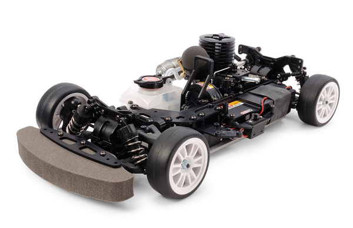

タミヤ TG10-Mk.2 FN

引用元画像：タミヤ公式サイト
📋 基本情報
| メーカー | タミヤ（Tamiya） |
|---|---|
| 機種名 | TG10-Mk.2 FN |
| 型番 | 44053（シャーシキット） |
| 発売時期 | 2016年6月11日 |
| 生産状況 | 生産終了 |
| カテゴリー | ラジコンカー（1/10スケール エンジンRCカー） |
| サブカテゴリー | グローエンジンカー（オンロード・ツーリング・ナロー仕様） |
📏 シャーシスペック
| 全長 | 377mm |
|---|---|
| 全幅 | 185～190mm（可変） |
| ホイールベース | 257mm |
| トレッド | 前後共164～168mm（可変） |
| タイヤ幅/径 | 24/64mm |
| フレーム | 3mm厚アルミ製ロワ＋ガラス強化ナイロン樹脂製アッパーのダブルデッキ |
⚙️ 駆動系
| 駆動方式 | シャフトドライブ4WD |
|---|---|
| デフギヤ | フロント4ベベル / リヤ2ベベル |
| ギヤ比 | シングルスピード（コスト重視の簡易仕様） |
| エンジン | タミヤ FS-12FN（2.1cc） |
| マフラー | TM-4 |
| 燃料タンク | 75cc |
🔧 サスペンション
| 形式 | 4輪ダブルウィッシュボーン（ナロータイプアーム） |
|---|---|
| ダンパー | CVAオイルダンパースーパーミニ |
| ステアリング | 3分割タイロッド |
💡 特徴
電動RCの190mm幅ボディに対応したエンジンカーシャーシ
- 1/10電動RCカーで一般的な190mm幅のボディでエンジンカーを楽しむことをコンセプト
- 電動カーからエンジンカーへの乗り換えを容易にするナロー仕様
- 豊富に揃ったTG10-Mk.2パーツが使用可能
扱いやすいFS-12FNエンジン
- 排気量2.1ccのタミヤFS-12FNエンジンを搭載
- テーパー形状の吸入口を持つスライドキャブレター
- ダイキャスト製ヒートシンクヘッドで効率的な放熱
- TM-4マフラーを標準装備
- リニアなトルク特性で扱いやすく、調整しやすい
- 小型リコイルスターターで手軽な始動
コストパフォーマンスに優れた仕様
- シングルスピードトランスミッションでコストを抑制
- プラスチック製オイルダンパー採用
- 初心者でも扱いやすい入門向けエンジンカー
高い拡張性
- ボディ選択の幅が広がる190mm幅対応
- TG10-Mk.2シリーズの豊富なオプションパーツが使用可能
- カスタマイズの自由度が高い
🔧 ぽすとそに工房での修理実績
修理難易度
★★★☆☆（普通、たまにヤフオクなどでパーツがみつかりますが、少し時間などがかかります）
よくある故障・注意点
- エンジンのキャブレター調整が初心者には難しい
- 燃料系統のゴム部品（チューブ、Oリング）の劣化
- プラスチック製ダンパーのオイル漏れ
- シングルスピード仕様のため加速と最高速のバランス調整が重要
- エンジンの慣らし運転が不十分だと性能が出ない
修理のポイント
- エンジンのキャブレター調整方法を理解する（ニードル調整）
- 燃料系統のゴム部品は定期的な交換が必要
- ダンパーオイルの点検と補充
- エンジンの慣らし運転を丁寧に行う（初期5～10タンク）
- グロープラグの状態確認と定期交換
その他の特徴
- 電動カーユーザーにエンジンカーの魅力を伝える入門モデル
- 190mm幅ボディの選択肢が豊富
- 初心者から中級者まで楽しめる
- エンジンカーの基本を学べる良いプラットフォーム